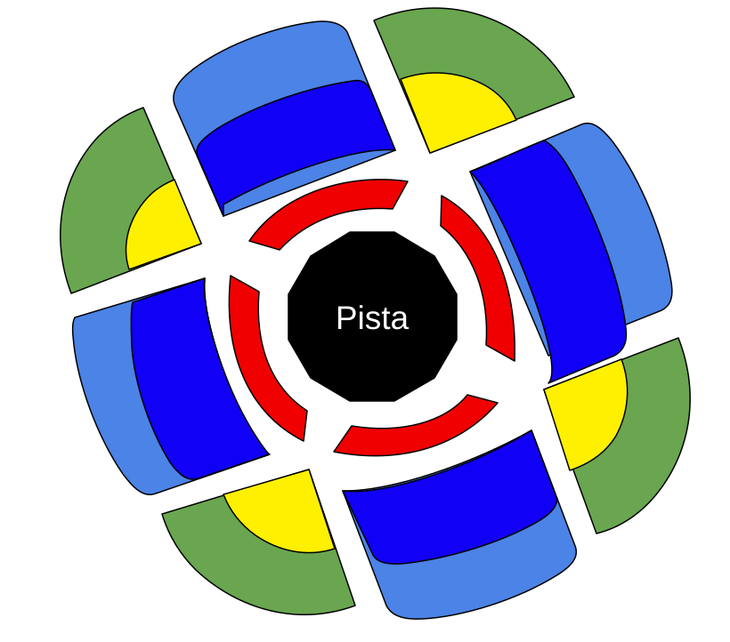

Entradas de la Charcada del Año IV
Estas son las categorías disponibles, con sus precios, colores y ubicación en el recinto.

| Categoría | Precio | Color | Ubicación y descripción |
|---|---|---|---|
| Categoría 1 | 190,00 € | Rojo | Las entradas de Categoría 1 están situadas en la zona interior del recinto, justo alrededor de la pista central donde se celebran los combates. Su ubicación permite disfrutar del espectáculo desde una posición muy cercana a los participantes, con una visión directa de la acción. Es la categoría más exclusiva del evento, ideal para quienes buscan vivir los combates con la máxima proximidad y una experiencia más inmersiva. |
| Categoría 2 | 124,00 € | Azul fuerte | Las localidades de Categoría 2 se encuentran en los sectores laterales interiores, entre la pista central y las zonas más exteriores del recinto. Ofrecen una perspectiva cercana de los combates y permiten seguir el desarrollo del espectáculo desde un buen ángulo lateral. Son una alternativa equilibrada para quienes desean estar cerca de la acción sin adquirir las entradas de la categoría más exclusiva. |
| Categoría 3 | 103,00 € | Azul claro | Las entradas de Categoría 3 están ubicadas en los sectores laterales exteriores del recinto, detrás de las localidades de Categoría 2. Desde esta posición se obtiene una vista más amplia y elevada de la pista central, lo que permite observar mejor la distribución general del espectáculo. Son una buena opción para disfrutar de los combates y del ambiente del evento a un precio intermedio. |
| Categoría 4 | 87,00 € | Amarillo | Las localidades de Categoría 4 se sitúan en las zonas inferiores de las esquinas del recinto, en los espacios que conectan los diferentes sectores laterales. Aunque están más alejadas de la pista central, permiten seguir los combates y contemplar el espectáculo desde una perspectiva diagonal. Son una opción adecuada para quienes buscan asistir al evento con un precio más asequible y disfrutar del ambiente de La Velada. |
| Categoría 5 | 53,00 € | Verde | Las entradas de Categoría 5 se encuentran en las zonas más exteriores y elevadas de las esquinas del recinto. Debido a su mayor distancia respecto a la pista central, ofrecen una visión más general del espectáculo y del conjunto de la instalación. Es la categoría más económica, pensada para quienes desean vivir la experiencia de La Velada y disfrutar del ambiente del evento con un presupuesto más reducido. |